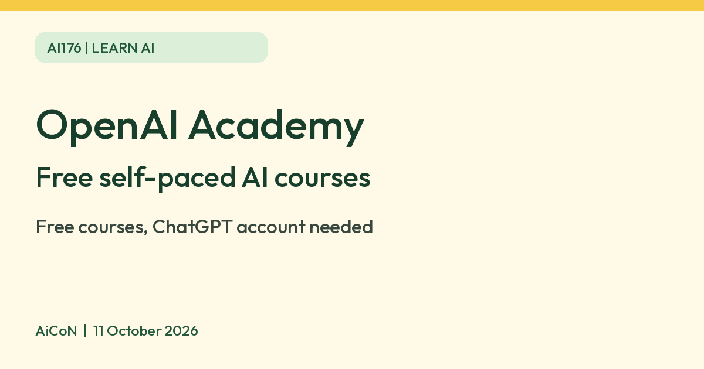

OpenAI Academy: free AI courses, with badges
OpenAI says its Academy courses are free. You need a ChatGPT account to start, and a score of 80 percent on the assessment earns a badge.

What it is
OpenAI Academy is OpenAI's set of self-paced courses for building practical AI skills. OpenAI's help page groups them into four areas: apply AI at work, build with AI, lead AI adoption, and teach and learn with AI. The courses are hosted on Gradual, which tracks enrollment and progress. Several are short. AI Foundations is listed at 60 to 75 minutes and covers AI basics, prompting, context and responsible use. AI for College Students is listed at 45 minutes and covers study planning, group work, writing and career preparation. AI for Educators is listed at 45 minutes. Some courses are technical, for developers using the OpenAI API or Codex.
Is it free
Yes. OpenAI's help page says "Academy courses are free" and need no workspace membership. You must have a ChatGPT account to start a course and save your progress. You can browse the courses without signing in. The help page says courses are available to anyone with a ChatGPT account; it does not state a paid-plan requirement. We did not sign in or test enrollment.
Badges and certificates
Every course has an assessment. OpenAI says you earn a badge by finishing the course and passing the assessment with 80 percent or more, and you can retry with a new set of questions. Finishing every course in an eligible pathway can earn a certificate of completion. OpenAI states that these badges and certificates are not certifications and do not guarantee eligibility for a future certification.
Is it available in India
OpenAI's help page says the courses are available globally to anyone with a ChatGPT account. It does not name India separately, so check the sign-up on your side.
How to try it
- Go to academy.openai.com and sign in with your ChatGPT account.
- Choose Courses and pick one, such as AI Foundations.
- Enroll in the matching learning path, take the course and its assessment if you want a badge, and mark each activity complete when prompted. A path can show 100% progress while still requiring a final completion action.
Account and credential privacy
Gradual hosts courses and tracks enrollment and progress. Accredible issues and manages badges tied to your account email; OpenAI also describes organizational reporting for learner participation and completion. Review the learning platform and credential sharing settings before publishing a badge. This guide does not claim your activity is anonymous or establish the platforms' retention periods. Do not upload confidential work while following along with examples.
Limits to know
- Progress and badges are linked to the email on your account. OpenAI says Academy accounts cannot be linked or merged after you begin a course, so sign in with the right account first.
- Courses focus on OpenAI products such as ChatGPT, the API and Codex.
- Times are estimates and may vary.
- We did not take a course ourselves.
Frequently asked questions
Is OpenAI Academy free?
Yes. OpenAI says Academy courses are free. You need a ChatGPT account to start a course and save your progress.
Sources: OpenAI Academy courses help page, OpenAI Academy. Checked 11 October 2026.